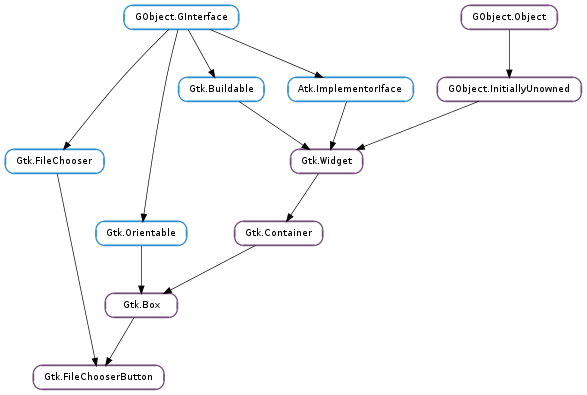

| static | new(title, action) |
| static | new_with_dialog(dialog) |
| get_focus_on_click() | |
| get_title() | |
| get_width_chars() | |
| set_focus_on_click(focus_on_click) | |
| set_title(title) | |
| set_width_chars(n_chars) |
| Name | Type | Flags | Description |
|---|---|---|---|
| dialog | Gtk.FileChooser | w/c | The file chooser dialog to use. |
| focus-on-click | bool | r/w | Whether the button grabs focus when it is clicked with the mouse |
| title | str | r/w | The title of the file chooser dialog. |
| width-chars | int | r/w | The desired width of the button widget, in characters. |
| Name | Parameters | Return | Description |
|---|---|---|---|
| file-set | The ::file-set signal is emitted when the user selects a file. Note that this signal is only emitted when the user changes the file. |
Bases: Gtk.Box, Gtk.FileChooser
The Gtk.FileChooserButton is a widget that lets the user select a file. It implements the Gtk.FileChooser interface. Visually, it is a file name with a button to bring up a Gtk.FileChooserDialog. The user can then use that dialog to change the file associated with that button. This widget does not support setting the Gtk.FileChooser :select-multiple property to True.
Create a button to let the user select a file in /etc
{
GtkWidget *button;
button = gtk_file_chooser_button_new (_("Select a file"),
GTK_FILE_CHOOSER_ACTION_OPEN);
gtk_file_chooser_set_current_folder (GTK_FILE_CHOOSER (button),
"/etc");
}
The Gtk.FileChooserButton supports the Gtk.FileChooserAction s Gtk.FileChooserAction.OPEN and Gtk.FileChooserAction.SELECT_FOLDER.
The Gtk.FileChooserButton will ellipsize the label, and will thus request little horizontal space. To give the button more space, you should call Gtk.Widget.get_preferred_size (), Gtk.FileChooserButton.set_width_chars (), or pack the button in such a way that other interface elements give space to the widget.
| Parameters: |
|
|---|---|
| Returns: | a new button widget. |
| Return type: |
Creates a new file-selecting button widget.
| Parameters: | dialog (Gtk.Widget) – the widget to use as dialog |
|---|---|
| Returns: | a new button widget. |
| Return type: | Gtk.Widget |
Creates a Gtk.FileChooserButton widget which uses dialog as its file-picking window.
Note that dialog must be a Gtk.Dialog (or subclass) which implements the Gtk.FileChooser interface and must not have Gtk.DialogFlags.DESTROY_WITH_PARENT set.
Also note that the dialog needs to have its confirmative button added with response Gtk.ResponseType.ACCEPT or Gtk.ResponseType.OK in order for the button to take over the file selected in the dialog.
| Returns: | True if the button grabs focus when it is clicked with the mouse. |
|---|---|
| Return type: | bool |
Returns whether the button grabs focus when it is clicked with the mouse. See Gtk.FileChooserButton.set_focus_on_click ().
| Returns: | a pointer to the browse dialog’s title. |
|---|---|
| Return type: | str |
Retrieves the title of the browse dialog used by button. The returned value should not be modified or freed.
| Returns: | an integer width (in characters) that the button will use to size itself. |
|---|---|
| Return type: | int |
Retrieves the width in characters of the button widget’s entry and/or label.
| Parameters: | focus_on_click (bool) – whether the button grabs focus when clicked with the mouse |
|---|
Sets whether the button will grab focus when it is clicked with the mouse. Making mouse clicks not grab focus is useful in places like toolbars where you don’t want the keyboard focus removed from the main area of the application.